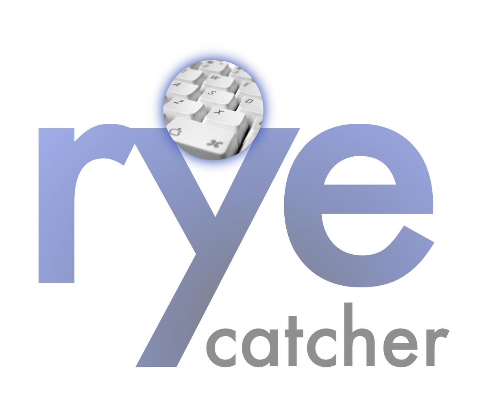

| |
 |
Rye Catcher Alert |
|

Recently used these phrases in search or chat:
something something
something something
something something
something something

How to Create Open Communication with Your Child:
- Positive communication with children means paying attention to when your child speaks, respecting their feelings, and watching your tone of voice.
- If you have a busy schedule, make sure to allocate some time every single day to simply sit and listen to your child without distractions.
- Children are curious and may be confused or embarassed by certain topics they come across in the world. Let them know it's natural, and that it is safe to bring these topics of concern to you.
- Children thrive with words of encouragement. Thank them for being brave enough to trust speaking with you on difficult topics, rather than going to a stranger. Let them know how proud you are, and offer them praise.
Disrupting online predators can begin in the home, with you!
Thank you for using Rye Catcher.Need help? Have more questions?
Contact Us: info@wearethorn.org
Website: www.wearethorn.org
Donate: gift@wearethorn.org
|
|